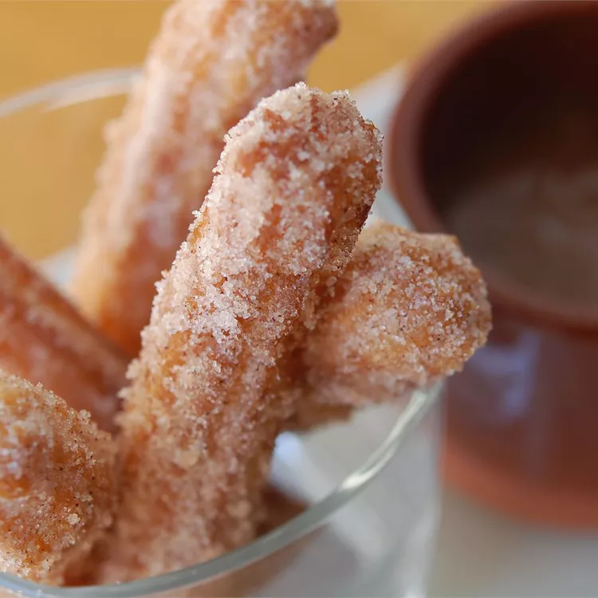

Churros

Description
A cinnamon and sugar topped fried pastry. Kind of like Doughnuts but Churros
are in the form of a stick. Although they are crispy on the outside they are
soft and fluffy on the inside. Can never go wrong with fresh churros for desert
or for whenever.
- 1 cup Water
- 2 1/2 tablespoons white sugar
- 1/2 teaspoon salt
- 1 cup all-purpose flour
- 2 quarts oil
- 1/2 cup white sugar, or to taste
- 1 teaspoon ground cinnamon
Steps
- Mix a cup of water, 2 1/2 table spoons sugar, salt, and 2 tablespoons
vegetable oil in a small pan and place over medium heat. Bring to boil and
remove from heat. Stir in flour and mix until it forms a ball
- Heat up oil in na pot or deep fryer to 375 degrees(F) or 190 degrees(C)
- Put dough into a pastry bag with a medium star tip. Pipe a few 5 to 6 inch
strips into the hot oil; work in batches so the pot is not crowded. Cook until
they are golden and transfer churros to a paper towel to drain.
- Combine 1/2 Cup sugar abd cinnamon. Roll the drained churros in the sugar
and cinnamon mixture.